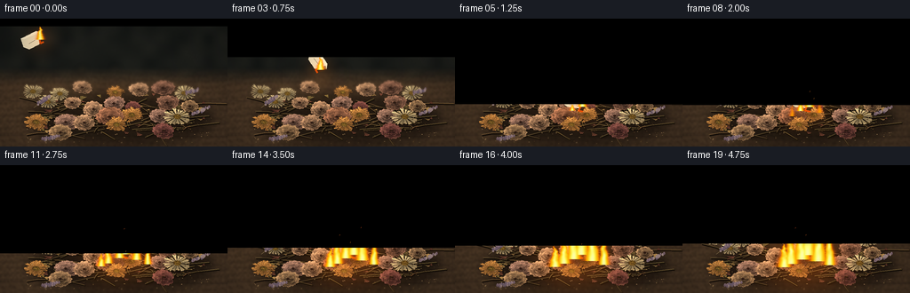
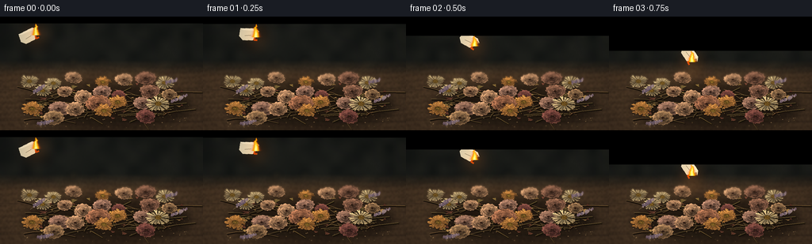
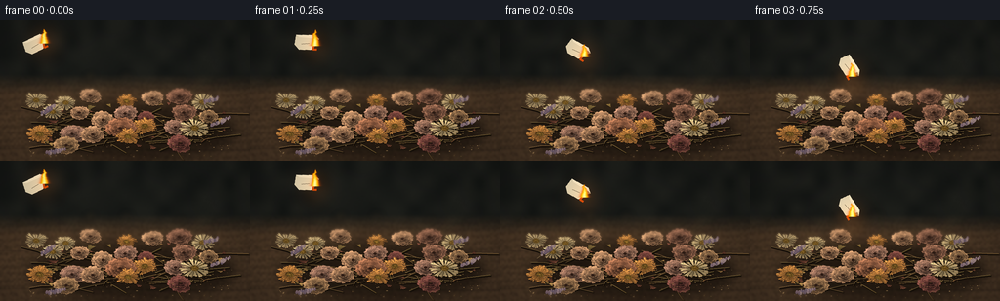
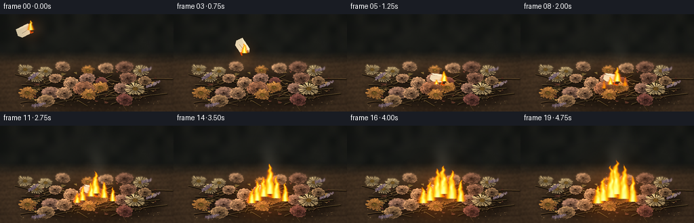

CODING AGENTS AS PIXEL WORLD MODELS
traex/GPT-6.1-Sol · material_0028
点击播放 · 原生 RGB 像素
逐轮保存的候选
回放视频、检查图与代码变化。
每份候选均可单独播放。实际图片检查记录在下方工具轨迹中。
候选 01播放与检查图
点击播放 · 原生 RGB 像素


展开代码变化
--- 上一保存版本
+++ 本次保存版本
@@ -0,0 +1,293 @@
+from pathlib import Path
+import math
+import numpy as np
+from PIL import Image, ImageDraw, ImageFilter
+from artifact_io import save
+
+ROOT = Path(__file__).resolve().parent
+W,H,S=256,144,3
+WW,HH=W*S,H*S
+rng=np.random.default_rng(29381)
+Y,X=np.mgrid[0:HH,0:WW].astype(float); X/=S; Y/=S
+
+def noise_field(w,h,scale,seed):
+ rr=np.random.default_rng(seed)
+ a=rr.random((max(2,int(h/scale)),max(2,int(w/scale))))
+ return np.asarray(Image.fromarray((a*255).astype('uint8')).resize((w,h),Image.Resampling.BICUBIC)).astype(float)/255
+
+# Quiet out-of-focus studio background and a warm, worn wooden surface.
+n=noise_field(WW,HH,40,12)
+wood=noise_field(WW,HH,6,81)
+fine=rng.normal(0,1,(HH,WW))
+wall=np.stack([20+10*n,22+9*n,20+7*n],-1)
+table=np.stack([51+15*wood,38+11*wood,27+7*wood],-1)
+grains=(np.sin(Y*.9+3*np.sin(X*.023)+wood*.7)+.45*np.sin(Y*3.9+X*.018))
+table+=grains[:,:,None]*np.array([3.2,2.4,1.6])
+light=np.exp(-(((X-119)/133)**2+((Y-86)/85)**2))
+table+=light[:,:,None]*np.array([22,16,9])
+blend=np.clip((Y-55)/20,0,1)[...,None]
+base=wall*(1-blend)+table*blend+fine[...,None]*.9
+# Dark soft horizontal grain and seams.
+im=Image.fromarray(np.uint8(np.clip(base,0,255)))
+d=ImageDraw.Draw(im)
+for yy in [92,131]:
+ d.line([(0,int(yy*S)),(WW,int((yy+2)*S))],fill=(41,30,22),width=2)
+im=im.filter(ImageFilter.GaussianBlur(.65*S))
+# Blurred shapes of a few distant buds.
+far=Image.new('RGBA',(WW,HH));fd=ImageDraw.Draw(far)
+for i in range(25):
+ xx=rng.uniform(16,242);yy=rng.uniform(55,86);rx=rng.uniform(2,7)
+ col=tuple(int(v) for v in rng.choice(np.array([[73,57,44],[67,46,40],[94,75,49]])))
+ fd.ellipse(((xx-rx)*S,(yy-rx*.5)*S,(xx+rx)*S,(yy+rx*.5)*S),fill=col+(100,))
+im=Image.alpha_composite(im.convert('RGBA'),far.filter(ImageFilter.GaussianBlur(3.5*S)))
+# The diffuse contact shadow anchors the pile to the table.
+sh=Image.new('RGBA',(WW,HH));sd=ImageDraw.Draw(sh)
+sd.ellipse((31*S,85*S,241*S,143*S),fill=(8,5,3,155))
+im=Image.alpha_composite(im,sh.filter(ImageFilter.GaussianBlur(7*S)))
+
+def line(points,col,width=1):
+ ImageDraw.Draw(im).line([(int(x*S),int(y*S)) for x,y in points],fill=col,width=max(1,int(width*S)))
+
+# A loose lattice of brittle stems, not an arranged bouquet.
+for i in range(95):
+ x=rng.uniform(51,212);y=rng.uniform(96,129)
+ length=rng.uniform(13,57);angle=rng.uniform(-3.1,3.1)
+ xe=x+length*np.cos(angle);ye=y+length*.30*np.sin(angle)
+ points=[(x,y),(x+(xe-x)*.48,y+(ye-y)*.5-1),(xe,ye)]
+ line([(xx+.7,yy+1) for xx,yy in points],(24,17,10,255),1.9)
+ line(points,(int(rng.uniform(85,122)),int(rng.uniform(67,90)),42,255),.7)
+ line([(xx-.2,yy-.2) for xx,yy in points],(132,107,63,190),.24)
+
+# Render a thin crinkled botanical petal as a shaded and textured surface.
+def petal(cx,cy,r,a,span,color,flatten=.68,seed=1,inner=.29):
+ pr=np.random.default_rng(seed)
+ ta=np.linspace(-span/2,span/2,39)
+ asym=pr.uniform(-.10,.10)
+ rr=r*(.89+.11*np.cos(ta*2)+.048*np.sin(ta*14+seed)+.025*np.sin(ta*31+seed*.31))
+ outer=a+ta
+ px=cx+rr*np.cos(outer);py=cy+flatten*rr*np.sin(outer)
+ ri=r*(inner+.08*np.cos(ta*3+1))
+ ix=cx+ri*np.cos(outer[::-1]);iy=cy+flatten*ri*np.sin(outer[::-1])
+ coords=list(zip(px,py))+list(zip(ix,iy))
+ bx=max(0,int(min(z[0] for z in coords)*S)-2);by=max(0,int(min(z[1] for z in coords)*S)-2)
+ ex=min(WW,int(max(z[0] for z in coords)*S)+3);ey=min(HH,int(max(z[1] for z in coords)*S)+3)
+ if ex<=bx or ey<=by:return
+ mask=Image.new('L',(ex-bx,ey-by));md=ImageDraw.Draw(mask)
+ md.polygon([(x*S-bx,y*S-by) for x,y in coords],fill=255)
+ # Small occlusion shadow underneath each overlapping petal.
+ shadow=Image.new('RGBA',(ex-bx+10,ey-by+10),(11,6,4,0))
+ sm=Image.new('L',shadow.size);sm.paste(mask,(5,6));sm=sm.filter(ImageFilter.GaussianBlur(1.5))
+ sm=sm.point(lambda v:int(v*.43));shadow.putalpha(sm)
+ im.alpha_composite(shadow,(bx-5,by-4))
+ yy,xx=np.mgrid[by:ey,bx:ex].astype(float);xx=xx/S-cx;yy=(yy/S-cy)/flatten
+ rad=np.hypot(xx,yy)/r;theta=np.arctan2(yy,xx)
+ da=np.arctan2(np.sin(theta-a),np.cos(theta-a))
+ # Folds slope towards the light at the upper left; desiccated veins catch highlights.
+ shade=.66+.32*rad+.16*np.cos((da-asym)*4)-.21*np.sin(theta+.6)
+ shade+=.055*np.sin(da*37+rad*15+seed)+.035*np.sin(da*88-rad*24)
+ shade+=pr.normal(0,.023,rad.shape)
+ edge=np.exp(-((rad-(.91+.045*np.sin(da*14+seed))) / .045)**2)
+ shade+=.22*edge
+ rgb=np.array(color)[None,None,:]*shade[:,:,None]
+ rgb+=edge[:,:,None]*np.array([16,13,7])[None,None,:]
+ arr=np.zeros((ey-by,ex-bx,4),dtype=np.uint8);arr[:,:,:3]=np.uint8(np.clip(rgb,0,255));arr[:,:,3]=np.array(mask)
+ im.alpha_composite(Image.fromarray(arr),(bx,by))
+ pd=ImageDraw.Draw(im)
+ # Rolled, occasionally split petal rim.
+ pd.line([(float(x*S),float(y*S)) for x,y in zip(px,py)],fill=tuple(int(min(255,c*1.13)) for c in color)+(160,),width=1)
+ for j in range(2):
+ t=int(pr.integers(7,32));x,y=px[t],py[t]
+ pd.line([(x*S,y*S),((x*.90+cx*.10)*S,(y*.90+cy*.10)*S)],fill=(58,33,23,175),width=1)
+
+# Lanceolate curled leaves and broken loose petals are scattered between heads.
+for k in range(59):
+ cx=rng.uniform(38,233);cy=rng.uniform(85,132)
+ a=rng.uniform(0,2*np.pi);r=rng.uniform(4,12)
+ petal(cx,cy,r,a,.65,tuple(rng.choice(np.array([[116,93,48],[98,80,44],[148,114,64],[110,65,48]]))),flatten=.45,seed=1000+k,inner=.03)
+
+flowers=[]
+# Small back row then the fuller, sharply focused foreground.
+for row in range(3):
+ for i in range(7):
+ x=43+i*27+rng.uniform(-7,7)+(5 if row==1 else 0)
+ y=81+row*16+rng.uniform(-5,5)
+ r=rng.uniform(9,15) if row<2 else rng.uniform(11,17)
+ flowers.append((x,y,r,rng.choice(['rose','rose','daisy','straw']),int(rng.integers(10000))))
+flowers+= [(68,128,13,'rose',602),(184,126,13,'rose',804),(131,119,12,'straw',162)]
+flowers.sort(key=lambda f:f[1])
+for cx,cy,r,kind,seed in flowers:
+ rrng=np.random.default_rng(seed)
+ if kind=='rose':
+ colors=[(143,92,65),(147,111,76),(117,67,59),(154,112,91),(133,91,70),(170,126,91)]
+ color=np.array(colors[int(rrng.integers(len(colors)))])
+ for layer,(fac,count) in enumerate([(1.,6),(.76,5),(.52,5),(.29,4)]):
+ phase=rrng.uniform(0,6.28)
+ for j in range(count):
+ a=phase+j*2*np.pi/count+rrng.uniform(-.13,.13)
+ c=color*rrng.uniform(.86,1.10)*(1-.075*layer)
+ petal(cx+rrng.uniform(-1,1),cy+rrng.uniform(-.6,.6),r*fac*rrng.uniform(.90,1.08),a,2*np.pi/count*1.55,tuple(c),seed=seed+layer*71+j,inner=.20)
+ ImageDraw.Draw(im).ellipse(((cx-1.6)*S,(cy-1)*S,(cx+1.2)*S,(cy+1)*S),fill=(47,28,20,255))
+ else:
+ count=17 if kind=='daisy' else 20
+ col=np.array((172,148,104) if kind=='daisy' else (169,112,54))
+ for layer in range(2 if kind=='straw' else 1):
+ for j in range(count):
+ a=j*2*np.pi/count+layer*.16+rrng.uniform(-.045,.045)
+ petal(cx,cy,r*(1-layer*.20)*rrng.uniform(.78,1.08),a,.19+rrng.uniform(0,.12),tuple(col*rrng.uniform(.85,1.10)),seed=seed+j+layer*100,inner=.23)
+ d=ImageDraw.Draw(im)
+ cr=r*.28
+ d.ellipse(((cx-cr)*S,(cy-cr*.67)*S,(cx+cr)*S,(cy+cr*.67)*S),fill=(79,54,24,255))
+ for j in range(95):
+ a=rrng.uniform(0,6.28);rad=cr*np.sqrt(rrng.random());px=cx+rad*np.cos(a);py=cy+.67*rad*np.sin(a)
+ value=rrng.uniform(.6,1.20)*(1-.3*rad/cr)
+ c=tuple(int(v*value) for v in (160,119,47))
+ d.ellipse((px*S,py*S,px*S+1.6,py*S+1.6),fill=c+(255,))
+
+# Brittle lavender sprigs with dusty purple seed heads, around the pile edges.
+for k,(cx,cy,a,length) in enumerate([(38,100,-.9,29),(209,111,-.6,32),(74,132,2.9,28),(204,86,-.5,23)]):
+ xe=cx+length*np.cos(a);ye=cy+length*.6*np.sin(a)
+ line([(cx,cy),(xe,ye)],(114,93,62,255),.8)
+ d=ImageDraw.Draw(im)
+ for j in range(23):
+ t=j/24
+ xx=cx+(xe-cx)*(.3+.7*t)+rng.uniform(-1.8,1.8);yy=cy+(ye-cy)*(.3+.7*t)+rng.uniform(-1.2,1.2)
+ c=rng.choice(np.array([[114,91,101],[138,114,120],[100,84,99],[157,133,129]]))
+ d.ellipse(((xx-1)*S,(yy-1.8)*S,(xx+1.1)*S,(yy+1.3)*S),fill=tuple(c)+(255,))
+ d.line([(xx*S,(yy-1.5)*S),(xx*S,(yy-.5)*S)],fill=(174,148,143,255),width=1)
+
+# Tiny torn flakes, seeds, and dry fibers on the near tabletop.
+d=ImageDraw.Draw(im)
+for i in range(150):
+ xx=rng.uniform(29,238);yy=rng.uniform(111,141)
+ if rng.random()<.6 and 72<xx<199 and yy<129:continue
+ c=rng.choice(np.array([[110,86,50],[148,117,78],[75,54,31]]))
+ sz=rng.uniform(.25,1.3)
+ d.ellipse((xx*S,yy*S,(xx+sz)*S,(yy+sz*.4)*S),fill=tuple(c)+(255,))
+static=np.asarray(im.convert('RGB')).astype(float)
+# Fixed camera, modest vignette and shallow focus at the flower heads.
+blur=np.asarray(im.convert('RGB').filter(ImageFilter.GaussianBlur(1.0*S))).astype(float)
+focus=np.clip((Y-64)/27,0,1)*np.clip((146-Y)/14,0,1)
+static=static*focus[...,None]+blur*(1-focus[...,None])
+
+# Physically styled fire: continuous turbulent luminous gas, no outlined shapes.
+flame_noise=noise_field(WW,HH,15,18)
+
+def fire(cx,cy,height,width,t,seed):
+ z=(cy-Y)/max(height,1)
+ dist=(X-cx)/max(width,1)
+ zz=np.clip(z,0,1.5)
+ wav=.15*np.sin(zz*9-t*7+seed)+.10*np.sin(zz*19-t*10+seed*.7)
+ wav+=.06*np.sin(zz*36-t*12+seed)
+ local=dist-wav*zz
+ thick=np.maximum(.012,(1-zz)**.75)
+ # Three smoothly wavering lobes create a split, tapered flame tip.
+ turbulence=.14*np.sin(X*.60+Y*.37+t*9+seed)+.07*np.sin(X*1.11-Y*.26-t*11)
+ turbulence*=np.sin(np.minimum(zz,1)*np.pi*.8)
+ core=np.exp(-((local/(thick+.035))**2)*2.3)
+ envelope=np.clip(1-zz,0,1)**.35
+ f=core*envelope+turbulence*core*.9
+ f*=((z>-.07)&(z<1.05))
+ return np.maximum(f,0)
+
+def paper_layer(px,py,angle,t,landed):
+ size=38*S
+ lay=Image.new('RGBA',(size,size));d=ImageDraw.Draw(lay)
+ cx=19*S;cy=19*S
+ # Slightly curled, ragged scrap of unprinted ivory paper.
+ points=np.array([[-12,-7],[7,-8],[12,-4],[10,7],[-8,8],[-13,3]],float)
+ if landed:points[:,1]*=.59
+ pts=[(cx+x*S,cy+y*S) for x,y in points]
+ d.polygon(pts,fill=(225,211,177,255))
+ d.polygon([(cx-12*S,cy-7*S),(cx+7*S,cy-8*S),(cx+8*S,cy-5*S),(cx-9*S,cy-5*S)],fill=(245,230,196,255))
+ d.polygon([(cx+8*S,cy-5*S),(cx+12*S,cy-4*S),(cx+10*S,cy+7*S),(cx+6*S,cy+5*S)],fill=(141,119,83,255))
+ burn=min(10,3+max(0,t-1)*2)
+ edge=[(cx+12*S,cy-4*S),(cx+10*S,cy+7*S),(cx+(9-burn)*S,cy+7*S),(cx+(10-burn)*S,cy+3*S),(cx+(12-burn)*S,cy-1*S)]
+ d.polygon(edge,fill=(43,29,17,255))
+ d.line(edge[1:],fill=(203,70,8,245),width=2*S)
+ d.line([(cx-6*S,cy+2*S),(cx+2*S,cy+1*S)],fill=(173,150,115,100),width=1)
+ lay=lay.rotate(angle,Image.Resampling.BICUBIC)
+ return lay,(int(px*S-size/2),int(py*S-size/2))
+
+frames=[]
+for frame in range(20):
+ t=frame/4
+ # A falling tossed paper is in free flight for the first second.
+ flight=min(t/1.13,1)
+ px=37+98*flight
+ py=24-29*flight+100*flight**2
+ landed=t>=1.13
+ if landed:px=135;py=96
+ angle=24-125*flight if not landed else -10
+ image=Image.fromarray(np.uint8(np.clip(static,0,255))).convert('RGBA')
+ # Contact or moving shadow under the falling scrap.
+ sh=Image.new('RGBA',(WW,HH));dd=ImageDraw.Draw(sh)
+ sy=103+flight*5;alpha=int(25+70*flight)
+ dd.ellipse(((px-12)*S,(sy-3)*S,(px+12)*S,(sy+3)*S),fill=(17,10,5,alpha))
+ image=Image.alpha_composite(image,sh.filter(ImageFilter.GaussianBlur((4-3*flight)*S)))
+ arr=np.asarray(image.convert('RGB')).astype(float)
+ spread=np.clip((t-1.65)/2.8,0,1)
+ # Heat darkens the blossoms nearest the point of ignition over time.
+ char=np.exp(-(((X-138)/(11+spread*25))**2+((Y-104)/(6+spread*11))**2)*1.6)*np.clip((t-1.5)/3,0,.8)
+ arr*=1-char[...,None]*.69
+ image=Image.fromarray(np.uint8(np.clip(arr,0,255))).convert('RGBA')
+ lay,pos=paper_layer(px,py,angle,t,landed)
+ image.alpha_composite(lay,pos)
+ # Main source stays attached to the burning edge in flight and the pile after contact.
+ F=np.zeros((HH,WW));glow=np.zeros_like(F)
+ if not landed:
+ # right-hand tip of the rotating scrap
+ rad=-angle*np.pi/180
+ fx=px+8*np.cos(rad)-2*np.sin(rad);fy=py+8*np.sin(rad)+2*np.cos(rad)
+ F=fire(fx,fy,14+2*np.sin(t*8),4.5,t,1)
+ glow=np.exp(-(((X-fx)/15)**2+((Y-fy)/17)**2))*0.30
+ else:
+ sources=[(142,98,17+spread*37,5.0+spread*6,1),(133,103,7+spread*40,3+spread*7,4)]
+ if spread>.07:sources += [(123,109,10+spread*28,3+spread*6,7),(153,105,9+spread*36,3+spread*7,9)]
+ if spread>.35:sources += [(114,113,8+spread*24,3+spread*5,12),(166,110,9+spread*26,3+spread*4,15)]
+ for sx,sy,h,w,se in sources:
+ strength=1 if se<5 else min(1,spread*2.5)
+ flame=fire(sx+1.4*np.sin(t*6+se),sy,h*(.9+.13*np.sin(t*9+se)),w,t,se)*strength
+ F=np.maximum(F,flame)
+ glow+=np.exp(-(((X-sx)/(w*3+8))**2+((Y-sy)/(h*.65+7))**2))*.18*strength
+ rgb=np.asarray(image.convert('RGB')).astype(float)
+ # Real warm light falls over the adjacent matte, dry petals.
+ rgb+=np.clip(glow,0,.7)[...,None]*np.array([92,40,6])
+ # Gentle translucent smoke is carried upward behind the flames.
+ if landed:
+ smoke=np.zeros_like(F)
+ for j in range(7):
+ age=(t*.65+j*.34)%2.4
+ xx=140+8*np.sin(age*1.7+t*.5)+age*4;yy=94-age*33
+ radius=5+age*5
+ smoke+=np.exp(-(((X-xx)/radius)**2+((Y-yy)/(radius*1.7))**2))*max(0,.13-age*.035)
+ smoke*=np.clip((t-1.2)*.35,0,.7)
+ smoke=np.clip(smoke,0,.21)
+ rgb=rgb*(1-smoke[...,None])+np.array([133,128,115])*smoke[...,None]
+ # Fire spectral colors: translucent red fringe, bright orange mantle, pale yellow core.
+ density=np.clip(F,0,1)
+ alpha=np.clip(density*3.1,0,1)**.75
+ red=np.full_like(F,255.)
+ green=np.clip(59+204*density**.63,0,252)
+ blue=np.clip(2+165*np.maximum(0,(density-.30)/.70)**1.8,0,181)
+ flame_rgb=np.stack([red,green,blue],-1)
+ rgb=rgb*(1-alpha[...,None])+flame_rgb*alpha[...,None]
+ # Soft optical bloom only around hot gas.
+ hot=np.array(Image.fromarray(np.uint8(np.clip(density*255,0,255))).filter(ImageFilter.GaussianBlur(1.6*S))).astype(float)/255
+ rgb+=hot[...,None]*np.array([24,13,2])
+ if landed:
+ # A few tiny rising sparks from the igniting brittle material.
+ img=Image.fromarray(np.uint8(np.clip(rgb,0,255)))
+ dr=ImageDraw.Draw(img)
+ for j in range(4):
+ age=(t*1.3+j*.23)%1.4
+ xx=137+14*np.sin(j*4.3)+age*4;yy=99-age*36
+ if spread>.08 and age<1:
+ dr.line([(xx*S,yy*S),((xx-.4)*S,(yy+1)*S)],fill=(245,int(155-age*70),39),width=1)
+ rgb=np.asarray(img).astype(float)
+ vignette=1-.20*((X-128)**2/170**2+(Y-77)**2/145**2)
+ rgb*=vignette[...,None]
+ # Downsampling integrates the subpixel veins and fibers into a photographic surface.
+ final=Image.fromarray(np.uint8(np.clip(rgb,0,255))).resize((W,H),Image.Resampling.LANCZOS)
+ frames.append(np.asarray(final))
+save(np.stack(frames),ROOT)
+print('Saved 20 RGB frames to',ROOT)
候选 02播放与检查图
点击播放 · 原生 RGB 像素


展开代码变化
--- 上一保存版本
+++ 本次保存版本
@@ -179,7 +179,7 @@
wav=.15*np.sin(zz*9-t*7+seed)+.10*np.sin(zz*19-t*10+seed*.7)
wav+=.06*np.sin(zz*36-t*12+seed)
local=dist-wav*zz
- thick=np.maximum(.012,(1-zz)**.75)
+ thick=np.maximum(.012,np.maximum(0,1-zz)**.75)
# Three smoothly wavering lobes create a split, tapered flame tip.
turbulence=.14*np.sin(X*.60+Y*.37+t*9+seed)+.07*np.sin(X*1.11-Y*.26-t*11)
turbulence*=np.sin(np.minimum(zz,1)*np.pi*.8)
可观测工具轨迹
实际执行的命令与返回图片。
命令 1exit 0
/bin/bash -lc 'ls -la && cat prompt.txt && cat GENERATION_RULES.md && cat task_spec.json'
命令 2exit 0
/bin/bash -lc "cat artifact_io.py && python - <<'PY'
import numpy,PIL
print('ready')
PY"命令 3exit 0
/bin/bash -lc "ls -la .tmp && python - <<'PY' import importlib.util for x in ['scipy','numpy','PIL']: print(x, bool(importlib.util.find_spec(x))) PY"
命令 4exit 0
/bin/bash -lc "cat > generate.py <<'PY'
from pathlib import Path
import math
import numpy as np
from PIL import Image, ImageDraw, ImageFilter
from artifact_io import save
ROOT = Path(__file__).resolve().parent
W,H,S=256,144,3
WW,HH=W*S,H*S
rng=np.random.default_rng(29381)
Y,X=np.mgrid[0:HH,0:WW].astype(float); X/=S; Y/=S
def noise_field(w,h,scale,seed):
rr=np.random.default_rng(seed)
a=rr.random((max(2,int(h/scale)),max(2,int(w/scale))))
return np.asarray(Image.fromarray((a*255).astype('uint8')).resize((w,h),Image.Resampling.BICUBIC)).astype(float)/255
# Quiet out-of-focus studio background and a warm, worn wooden surface.
n=noise_field(WW,HH,40,12)
wood=noise_field(WW,HH,6,81)
fine=rng.normal(0,1,(HH,WW))
wall=np.stack([20+10*n,22+9*n,20+7*n],-1)
table=np.stack([51+15*wood,38+11*wood,27+7*wood],-1)
grains=(np.sin(Y*.9+3*np.sin(X*.023)+wood*.7)+.45*np.sin(Y*3.9+X*.018))
table+=grains[:,:,None]*np.array([3.2,2.4,1.6])
light=np.exp(-(((X-119)/133)**2+((Y-86)/85)**2))
table+=light[:,:,None]*np.array([22,16,9])
blend=np.clip((Y-55)/20,0,1)[...,None]
base=wall*(1-blend)+table*blend+fine[...,None]*.9
# Dark soft horizontal grain and seams.
im=Image.fromarray(np.uint8(np.clip(base,0,255)))
d=ImageDraw.Draw(im)
for yy in [92,131]:
d.line([(0,int(yy*S)),(WW,int((yy+2)*S))],fill=(41,30,22),width=2)
im=im.filter(ImageFilter.GaussianBlur(.65*S))
# Blurred shapes of a few distant buds.
far=Image.new('RGBA',(WW,HH));fd=ImageDraw.Draw(far)
for i in range(25):
xx=rng.uniform(16,242);yy=rng.uniform(55,86);rx=rng.uniform(2,7)
col=tuple(int(v) for v in rng.choice(np.array([[73,57,44],[67,46,40],[94,75,49]])))
fd.ellipse(((xx-rx)*S,(yy-rx*.5)*S,(xx+rx)*S,(yy+rx*.5)*S),fill=col+(100,))
im=Image.alpha_composite(im.convert('RGBA'),far.filter(ImageFilter.GaussianBlur(3.5*S)))
# The diffuse contact shadow anchors the pile to the table.
sh=Image.new('RGBA',(WW,HH));sd=ImageDraw.Draw(sh)
sd.ellipse((31*S,85*S,241*S,143*S),fill=(8,5,3,155))
im=Image.alpha_composite(im,sh.filter(ImageFilter.GaussianBlur(7*S)))
def line(points,col,width=1):
ImageDraw.Draw(im).line([(int(x*S),int(y*S)) for x,y in points],fill=col,width=max(1,int(width*S)))
# A loose lattice of brittle stems, not an arranged bouquet.
for i in range(95):
x=rng.uniform(51,212);y=rng.uniform(96,129)
length=rng.uniform(13,57);angle=rng.uniform(-3.1,3.1)
xe=x+length*np.cos(angle);ye=y+length*.30*np.sin(angle)
points=[(x,y),(x+(xe-x)*.48,y+(ye-y)*.5-1),(xe,ye)]
line([(xx+.7,yy+1) for xx,yy in points],(24,17,10,255),1.9)
line(points,(int(rng.uniform(85,122)),int(rng.uniform(67,90)),42,255),.7)
line([(xx-.2,yy-.2) for xx,yy in points],(132,107,63,190),.24)
# Render a thin crinkled botanical petal as a shaded and textured surface.
def petal(cx,cy,r,a,span,color,flatten=.68,seed=1,inner=.29):
pr=np.random.default_rng(seed)
ta=np.linspace(-span/2,span/2,39)
asym=pr.uniform(-.10,.10)
rr=r*(.89+.11*np.cos(ta*2)+.048*np.sin(ta*14+seed)+.025*np.sin(ta*31+seed*.31))
outer=a+ta
px=cx+rr*np.cos(outer);py=cy+flatten*rr*np.sin(outer)
ri=r*(inner+.08*np.cos(ta*3+1))
ix=cx+ri*np.cos(outer[::-1]);iy=cy+flatten*ri*np.sin(outer[::-1])
coords=list(zip(px,py))+list(zip(ix,iy))
bx=max(0,int(min(z[0] for z in coords)*S)-2);by=max(0,int(min(z[1] for z in coords)*S)-2)
ex=min(WW,int(max(z[0] for z in coords)*S)+3);ey=min(HH,int(max(z[1] for z in coords)*S)+3)
if ex<=bx or ey<=by:return
mask=Image.new('L',(ex-bx,ey-by));md=ImageDraw.Draw(mask)
md.polygon([(x*S-bx,y*S-by) for x,y in coords],fill=255)
# Small occlusion shadow underneath each overlapping petal.
shadow=Image.new('RGBA',(ex-bx+10,ey-by+10),(11,6,4,0))
sm=Image.new('L',shadow.size);sm.paste(mask,(5,6));sm=sm.filter(ImageFilter.GaussianBlur(1.5))
sm=sm.point(lambda v:int(v*.43));shadow.putalpha(sm)
im.alpha_composite(shadow,(bx-5,by-4))
yy,xx=np.mgrid[by:ey,bx:ex].astype(float);xx=xx/S-cx;yy=(yy/S-cy)/flatten
rad=np.hypot(xx,yy)/r;theta=np.arctan2(yy,xx)
da=np.arctan2(np.sin(theta-a),np.cos(theta-a))
# Folds slope towards the light at the upper left; desiccated veins catch highlights.
shade=.66+.32*rad+.16*np.cos((da-asym)*4)-.21*np.sin(theta+.6)
shade+=.055*np.sin(da*37+rad*15+seed)+.035*np.sin(da*88-rad*24)
shade+=pr.normal(0,.023,rad.shape)
edge=np.exp(-((rad-(.91+.045*np.sin(da*14+seed))) / .045)**2)
shade+=.22*edge
rgb=np.array(color)[None,None,:]*shade[:,:,None]
rgb+=edge[:,:,None]*np.array([16,13,7])[None,None,:]
arr=np.zeros((ey-by,ex-bx,4),dtype=np.uint8);arr[:,:,:3]=np.uint8(np.clip(rgb,0,255));arr[:,:,3]=np.array(mask)
im.alpha_composite(Image.fromarray(arr),(bx,by))
pd=ImageDraw.Draw(im)
# Rolled, occasionally split petal rim.
pd.line([(float(x*S),float(y*S)) for x,y in zip(px,py)],fill=tuple(int(min(255,c*1.13)) for c in color)+(160,),width=1)
for j in range(2):
t=int(pr.integers(7,32));x,y=px[t],py[t]
pd.line([(x*S,y*S),((x*.90+cx*.10)*S,(y*.90+cy*.10)*S)],fill=(58,33,23,175),width=1)
# Lanceolate curled leaves and broken loose petals are scattered between heads.
for k in range(59):
cx=rng.uniform(38,233);cy=rng.uniform(85,132)
a=rng.uniform(0,2*np.pi);r=rng.uniform(4,12)
petal(cx,cy,r,a,.65,tuple(rng.choice(np.array([[116,93,48],[98,80,44],[148,114,64],[110,65,48]]))),flatten=.45,seed=1000+k,inner=.03)
flowers=[]
# Small back row then the fuller, sharply focused foreground.
for row in range(3):
for i in range(7):
x=43+i*27+rng.uniform(-7,7)+(5 if row==1 else 0)
y=81+row*16+rng.uniform(-5,5)
r=rng.uniform(9,15) if row<2 else rng.uniform(11,17)
flowers.append((x,y,r,rng.choice(['rose','rose','daisy','straw']),int(rng.integers(10000))))
flowers+= [(68,128,13,'rose',602),(184,126,13,'rose',804),(131,119,12,'straw',162)]
flowers.sort(key=lambda f:f[1])
for cx,cy,r,kind,seed in flowers:
rrng=np.random.default_rng(seed)
if kind=='rose':
colors=[(143,92,65),(147,111,76),(117,67,59),(154,112,91),(133,91,70),(170,126,91)]
color=np.array(colors[int(rrng.integers(len(colors)))])
for layer,(fac,count) in enumerate([(1.,6),(.76,5),(.52,5),(.29,4)]):
phase=rrng.uniform(0,6.28)
for j in range(count):
a=phase+j*2*np.pi/count+rrng.uniform(-.13,.13)
c=color*rrng.uniform(.86,1.10)*(1-.075*layer)
petal(cx+rrng.uniform(-1,1),cy+rrng.uniform(-.6,.6),r*fac*rrng.uniform(.90,1.08),a,2*np.pi/count*1.55,tuple(c),seed=seed+layer*71+j,inner=.20)
ImageDraw.Draw(im).ellipse(((cx-1.6)*S,(cy-1)*S,(cx+1.2)*S,(cy+1)*S),fill=(47,28,20,255))
else:
count=17 if kind=='daisy' else 20
col=np.array((172,148,104) if kind=='daisy' else (169,112,54))
for layer in range(2 if kind=='straw' else 1):
for j in range(count):
a=j*2*np.pi/count+layer*.16+rrng.uniform(-.045,.045)
petal(cx,cy,r*(1-layer*.20)*rrng.uniform(.78,1.08),a,.19+rrng.uniform(0,.12),tuple(col*rrng.uniform(.85,1.10)),seed=seed+j+layer*100,inner=.23)
d=ImageDraw.Draw(im)
cr=r*.28
d.ellipse(((cx-cr)*S,(cy-cr*.67)*S,(cx+cr)*S,(cy+cr*.67)*S),fill=(79,54,24,255))
for j in range(95):
a=rrng.uniform(0,6.28);rad=cr*np.sqrt(rrng.random());px=cx+rad*np.cos(a);py=cy+.67*rad*np.sin(a)
value=rrng.uniform(.6,1.20)*(1-.3*rad/cr)
c=tuple(int(v*value) for v in (160,119,47))
d.ellipse((px*S,py*S,px*S+1.6,py*S+1.6),fill=c+(255,))
# Brittle lavender sprigs with dusty purple seed heads, around the pile edges.
for k,(cx,cy,a,length) in enumerate([(38,100,-.9,29),(209,111,-.6,32),(74,132,2.9,28),(204,86,-.5,23)]):
xe=cx+length*np.cos(a);ye=cy+length*.6*np.sin(a)
line([(cx,cy),(xe,ye)],(114,93,62,255),.8)
d=ImageDraw.Draw(im)
for j in range(23):
t=j/24
xx=cx+(xe-cx)*(.3+.7*t)+rng.uniform(-1.8,1.8);yy=cy+(ye-cy)*(.3+.7*t)+rng.uniform(-1.2,1.2)
c=rng.choice(np.array([[114,91,101],[138,114,120],[100,84,99],[157,133,129]]))
d.ellipse(((xx-1)*S,(yy-1.8)*S,(xx+1.1)*S,(yy+1.3)*S),fill=tuple(c)+(255,))
d.line([(xx*S,(yy-1.5)*S),(xx*S,(yy-.5)*S)],fill=(174,148,143,255),width=1)
# Tiny torn flakes, seeds, and dry fibers on the near tabletop.
d=ImageDraw.Draw(im)
for i in range(150):
xx=rng.uniform(29,238);yy=rng.uniform(111,141)
if rng.random()<.6 and 72<xx<199 and yy<129:continue
c=rng.choice(np.array([[110,86,50],[148,117,78],[75,54,31]]))
sz=rng.uniform(.25,1.3)
d.ellipse((xx*S,yy*S,(xx+sz)*S,(yy+sz*.4)*S),fill=tuple(c)+(255,))
static=np.asarray(im.convert('RGB')).astype(float)
# Fixed camera, modest vignette and shallow focus at the flower heads.
blur=np.asarray(im.convert('RGB').filter(ImageFilter.GaussianBlur(1.0*S))).astype(float)
focus=np.clip((Y-64)/27,0,1)*np.clip((146-Y)/14,0,1)
static=static*focus[...,None]+blur*(1-focus[...,None])
# Physically styled fire: continuous turbulent luminous gas, no outlined shapes.
flame_noise=noise_field(WW,HH,15,18)
def fire(cx,cy,height,width,t,seed):
z=(cy-Y)/max(height,1)
dist=(X-cx)/max(width,1)
zz=np.clip(z,0,1.5)
wav=.15*np.sin(zz*9-t*7+seed)+.10*np.sin(zz*19-t*10+seed*.7)
wav+=.06*np.sin(zz*36-t*12+seed)
local=dist-wav*zz
thick=np.maximum(.012,(1-zz)**.75)
# Three smoothly wavering lobes create a split, tapered flame tip.
turbulence=.14*np.sin(X*.60+Y*.37+t*9+seed)+.07*np.sin(X*1.11-Y*.26-t*11)
turbulence*=np.sin(np.minimum(zz,1)*np.pi*.8)
core=np.exp(-((local/(thick+.035))**2)*2.3)
envelope=np.clip(1-zz,0,1)**.35
f=core*envelope+turbulence*core*.9
f*=((z>-.07)&(z<1.05))
return np.maximum(f,0)
def paper_layer(px,py,angle,t,landed):
size=38*S
lay=Image.new('RGBA',(size,size));d=ImageDraw.Draw(lay)
cx=19*S;cy=19*S
# Slightly curled, ragged scrap of unprinted ivory paper.
points=np.array([[-12,-7],[7,-8],[12,-4],[10,7],[-8,8],[-13,3]],float)
if landed:points[:,1]*=.59
pts=[(cx+x*S,cy+y*S) for x,y in points]
d.polygon(pts,fill=(225,211,177,255))
d.polygon([(cx-12*S,cy-7*S),(cx+7*S,cy-8*S),(cx+8*S,cy-5*S),(cx-9*S,cy-5*S)],fill=(245,230,196,255))
d.polygon([(cx+8*S,cy-5*S),(cx+12*S,cy-4*S),(cx+10*S,cy+7*S),(cx+6*S,cy+5*S)],fill=(141,119,83,255))
burn=min(10,3+max(0,t-1)*2)
edge=[(cx+12*S,cy-4*S),(cx+10*S,cy+7*S),(cx+(9-burn)*S,cy+7*S),(cx+(10-burn)*S,cy+3*S),(cx+(12-burn)*S,cy-1*S)]
d.polygon(edge,fill=(43,29,17,255))
d.line(edge[1:],fill=(203,70,8,245),width=2*S)
d.line([(cx-6*S,cy+2*S),(cx+2*S,cy+1*S)],fill=(173,150,115,100),width=1)
lay=lay.rotate(angle,Image.Resampling.BICUBIC)
return lay,(int(px*S-size/2),int(py*S-size/2))
frames=[]
for frame in range(20):
t=frame/4
# A falling tossed paper is in free flight for the first second.
flight=min(t/1.13,1)
px=37+98*flight
py=24-29*flight+100*flight**2
landed=t>=1.13
if landed:px=135;py=96
angle=24-125*flight if not landed else -10
image=Image.fromarray(np.uint8(np.clip(static,0,255))).convert('RGBA')
# Contact or moving shadow under the falling scrap.
sh=Image.new('RGBA',(WW,HH));dd=ImageDraw.Draw(sh)
sy=103+flight*5;alpha=int(25+70*flight)
dd.ellipse(((px-12)*S,(sy-3)*S,(px+12)*S,(sy+3)*S),fill=(17,10,5,alpha))
image=Image.alpha_composite(image,sh.filter(ImageFilter.GaussianBlur((4-3*flight)*S)))
arr=np.asarray(image.convert('RGB')).astype(float)
spread=np.clip((t-1.65)/2.8,0,1)
# Heat darkens the blossoms nearest the point of ignition over time.
char=np.exp(-(((X-138)/(11+spread*25))**2+((Y-104)/(6+spread*11))**2)*1.6)*np.clip((t-1.5)/3,0,.8)
arr*=1-char[...,None]*.69
image=Image.fromarray(np.uint8(np.clip(arr,0,255))).convert('RGBA')
lay,pos=paper_layer(px,py,angle,t,landed)
image.alpha_composite(lay,pos)
# Main source stays attached to the burning edge in flight and the pile after contact.
F=np.zeros((HH,WW));glow=np.zeros_like(F)
if not landed:
# right-hand tip of the rotating scrap
rad=-angle*np.pi/180
fx=px+8*np.cos(rad)-2*np.sin(rad);fy=py+8*np.sin(rad)+2*np.cos(rad)
F=fire(fx,fy,14+2*np.sin(t*8),4.5,t,1)
glow=np.exp(-(((X-fx)/15)**2+((Y-fy)/17)**2))*0.30
else:
sources=[(142,98,17+spread*37,5.0+spread*6,1),(133,103,7+spread*40,3+spread*7,4)]
if spread>.07:sources += [(123,109,10+spread*28,3+spread*6,7),(153,105,9+spread*36,3+spread*7,9)]
if spread>.35:sources += [(114,113,8+spread*24,3+spread*5,12),(166,110,9+spread*26,3+spread*4,15)]
for sx,sy,h,w,se in sources:
strength=1 if se<5 else min(1,spread*2.5)
flame=fire(sx+1.4*np.sin(t*6+se),sy,h*(.9+.13*np.sin(t*9+se)),w,t,se)*strength
F=np.maximum(F,flame)
glow+=np.exp(-(((X-sx)/(w*3+8))**2+((Y-sy)/(h*.65+7))**2))*.18*strength
rgb=np.asarray(image.convert('RGB')).astype(float)
# Real warm light falls over the adjacent matte, dry petals.
rgb+=np.clip(glow,0,.7)[...,None]*np.array([92,40,6])
# Gentle translucent smoke is carried upward behind the flames.
if landed:
smoke=np.zeros_like(F)
for j in range(7):
age=(t*.65+j*.34)%2.4
xx=140+8*np.sin(age*1.7+t*.5)+age*4;yy=94-age*33
radius=5+age*5
smoke+=np.exp(-(((X-xx)/radius)**2+((Y-yy)/(radius*1.7))**2))*max(0,.13-age*.035)
smoke*=np.clip((t-1.2)*.35,0,.7)
smoke=np.clip(smoke,0,.21)
rgb=rgb*(1-smoke[...,None])+np.array([133,128,115])*smoke[...,None]
# Fire spectral colors: translucent red fringe, bright orange mantle, pale yellow core.
density=np.clip(F,0,1)
alpha=np.clip(density*3.1,0,1)**.75
red=np.full_like(F,255.)
green=np.clip(59+204*density**.63,0,252)
blue=np.clip(2+165*np.maximum(0,(density-.30)/.70)**1.8,0,181)
flame_rgb=np.stack([red,green,blue],-1)
rgb=rgb*(1-alpha[...,None])+flame_rgb*alpha[...,None]
# Soft optical bloom only around hot gas.
hot=np.array(Image.fromarray(np.uint8(np.clip(density*255,0,255))).filter(ImageFilter.GaussianBlur(1.6*S))).astype(float)/255
rgb+=hot[...,None]*np.array([24,13,2])
if landed:
# A few tiny rising sparks from the igniting brittle material.
img=Image.fromarray(np.uint8(np.clip(rgb,0,255)))
dr=ImageDraw.Draw(img)
for j in range(4):
age=(t*1.3+j*.23)%1.4
xx=137+14*np.sin(j*4.3)+age*4;yy=99-age*36
if spread>.08 and age<1:
dr.line([(xx*S,yy*S),((xx-.4)*S,(yy+1)*S)],fill=(245,int(155-age*70),39),width=1)
rgb=np.asarray(img).astype(float)
vignette=1-.20*((X-128)**2/170**2+(Y-77)**2/145**2)
rgb*=vignette[...,None]
# Downsampling integrates the subpixel veins and fibers into a photographic surface.
final=Image.fromarray(np.uint8(np.clip(rgb,0,255))).resize((W,H),Image.Resampling.LANCZOS)
frames.append(np.asarray(final))
save(np.stack(frames),ROOT)
print('Saved 20 RGB frames to',ROOT)
PY
python generate.py"命令 5exit 0
/bin/bash -lc "python - <<'PY'
p='generate.py'
s=open(p).read().replace('thick=np.maximum(.012,(1-zz)**.75)','thick=np.maximum(.012,np.maximum(0,1-zz)**.75)')
open(p,'w').write(s)
PY
python generate.py"命令 6exit 0
/bin/bash -lc 'command -v ffmpeg || true; ls -lh pixels.npz index.html frames/00.png'
视觉工具实际返回图片 1

保存候选 2 份；完成命令 6 次；可验证图片返回 1 张。原始 API 响应与完整日志保留在本地。